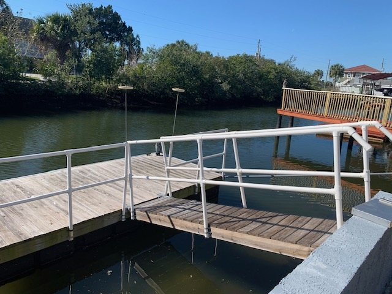
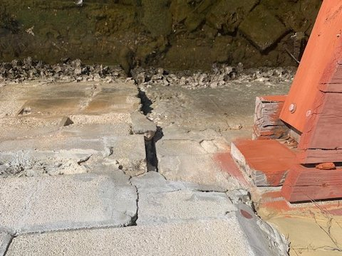

Complete home and commercial inspections across Delmarva, from an inspector who spent twelve years deciding whether buildings passed. And when the property has a bulkhead, a lift or a dock, that gets inspected too, by someone with no repair work to sell you.

Howard County, Maryland, where he was brought in to build the HVAC inspection department from nothing. He spent twelve years as the inspector other inspectors answered to.
#12209. When he writes up a heating or cooling system, he is the licensed tradesman — not someone recommending you hire one.
A national seat reviewing the standards of practice the rest of the profession is held to.
One inspector, one report, no subcontractors sent in your place. Residential and commercial.
Buyers, sellers and new construction. Structure, roof, systems and the things that turn into money later.
Retail, office and small commercial property, by an inspector who spent twelve years enforcing the code on buildings like them.
Find it before the buyer's inspector does, and price the house knowing what is in it.
NRSB-certified radon measurement, with results in time to act on them before settlement.
Samples collected and sent to an independent laboratory. The lab reads the results, which is how it should be.
A professional Fluke thermal camera, not a phone attachment. Moisture getting in where it should not, missing insulation, and heat escaping around windows and rooflines, reported as findings.
Seawalls, bulkheads, boat lifts and floating docks are almost always assessed by the companies that repair them. Coastal Inspections doesn't build, repair or replace anything, which means the report is the condition of the structure, not the beginning of a quote.
What a waterfront inspection covers →
Photographs, plain-English findings, and a clear separation between what needs attention now and what to keep an eye on. No 90-page template padded to look thorough.
About an hour in any direction from Ocean City, covering Worcester and Wicomico counties in Maryland and Sussex County in Delaware.
Eight in the morning to eight at night, seven days a week. Tell me about the property and I will tell you straight what is involved.
410-794-6092 Coastal Inspections · Maryland & Delaware